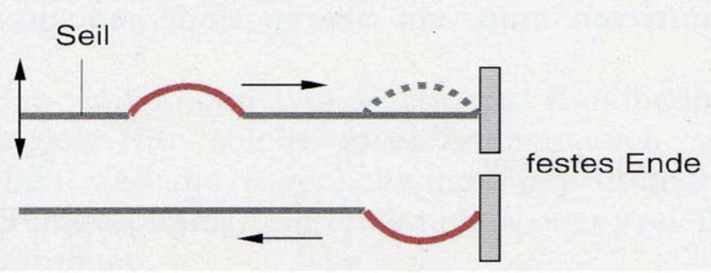
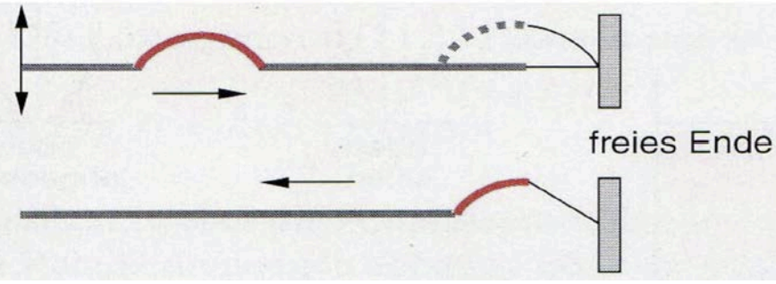
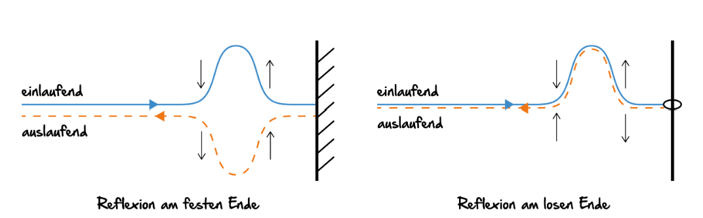
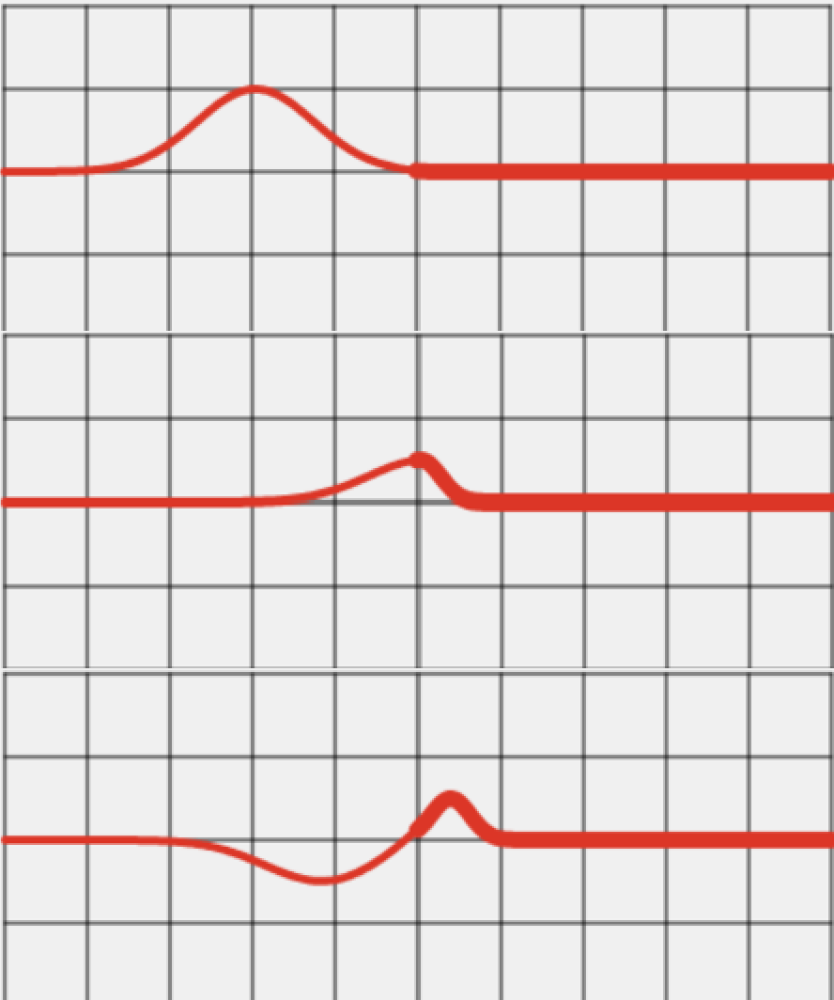
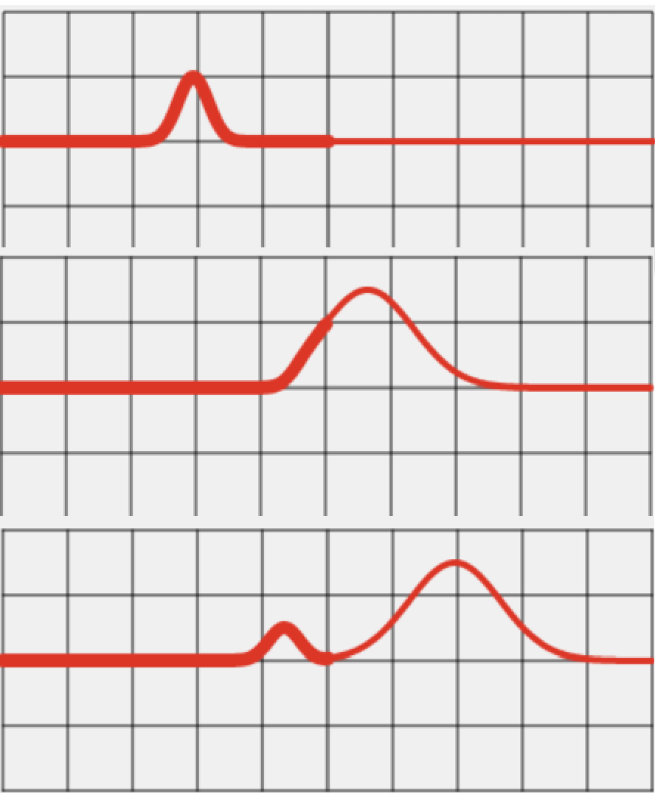
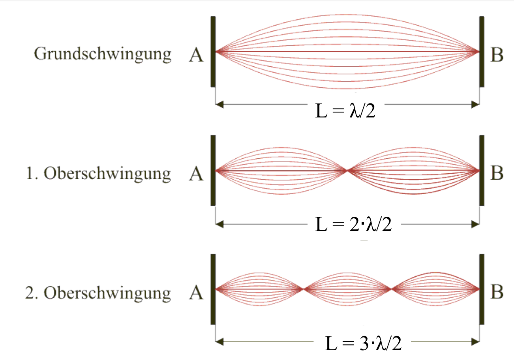
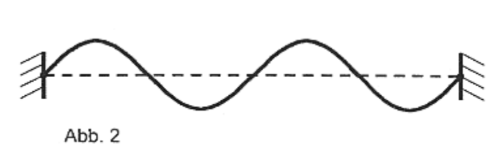

Jetzt bekommst du einen kompakten Überblick über Reflexion, Transmission und stehende Wellen.
Auf dieser Seite siehst du, wie Wellen an Enden und an Medienübergängen reagieren. Du erkennst, wann ein Phasensprung auftritt und wie daraus stehende Wellen entstehen.
1) Reflexion am Ende: Festes Ende → Phasensprung; loses Ende → kein Phasensprung.
2) Transmission/Reflexion am Übergang: Teil der Welle läuft weiter, ein Teil wird zurückgeworfen.
3) Stehende Wellen: Gegenläufige Wellen überlagern sich zu Knoten und Bäuchen.
Bearbeite alle Aufgaben auf dieser Internetseite. Wenn du fertig bist, schreibe deinen Namen links unten in das Namensfeld und klicke auf den Button "Summary & submit" darunter, um deine Antworten abzusenden. Auf der letzten Seite "Ergebnisse" findest du dann alle deine Antworten, außerdem wird noch eine txt-Datei mit den Ergebnissen heruntergeladen.
Jetzt lernst du, was Reflexion bei Wellen bedeutet und warum sich Wellen an einem festen oder losen Ende unterschiedlich verhalten.
Wenn sich eine Welle auf einem eindimensionalen Wellenträger bewegt und das Ende erreicht, wird sie reflektiert. Das heißt: Sie kehrt ihre Ausbreitungsrichtung um.
Jetzt lernst du Schritt für Schritt, was dabei am festen und am losen Ende passiert.
Beim festen Ende kann sich das Seil nicht aus der Gleichgewichtslage bewegen. Das Ende ist fixiert.
1. Ein Wellenberg läuft auf das feste Ende zu.
2. Das Ende kann nicht ausweichen, daher entsteht eine Rückwirkung auf das Seil.
3. Die Welle kehrt um – und der Wellenberg wird als Wellental zurückgeworfen.

Am festen Ende tritt ein Phasensprung von $\pi$ (180°) auf: Wellenberg ↔ Wellental.
Du kannst das selbst ausprobieren: Binde ein elastisches Seil an einem Ende fest und erzeuge am anderen Ende eine Störung. Beobachte die zurücklaufende Welle.
In der Simulation siehst du genau diesen Fall mit einem einmaligen nach oben ausgelenkten Puls. Nach der Reflexion am festen Ende kommt der Puls invertiert (nach unten) zurück.
Starte die Simulation und drücke genau im Moment der Reflexion an der Wand auf Stop.
Vergleiche dann die drei Kurven ganz genau:
einlaufender Puls (braun), reflektierter Puls (grün) und Überlagerung (pink).
Beschreibe in 2-3 Sätzen, was du am festen Ende über Spiegelung und Phasensprung erkennst.
Beim losen Ende kann sich das Seil bewegen. Das Ende ist frei und kann ausweichen.
1. Ein Wellenberg läuft auf das lose Ende zu.
2. Das Ende weicht aus, die Welle wird reflektiert.
3. Die Welle kehrt um – und der Wellenberg bleibt ein Wellenberg.

Am losen Ende tritt kein Phasensprung auf: Wellenberg bleibt Wellenberg, Wellental bleibt Wellental.
Lass ein elastisches Seil von einem hohen Punkt frei herunterhängen und erzeuge oben eine Störung. Beobachte die Reflexion am losen Ende.
In der Simulation siehst du einen einzelnen Puls am losen Ende: Die reflektierte Welle ist nur an der y-Achse gespiegelt (kein Phasensprung). Der pinke Punkt am rechten Ende bewegt sich mit.
Starte die Simulation und drücke im Reflexionsmoment am losen Ende auf Stop.
Vergleiche einlaufenden Puls (braun), reflektierten Puls (grün) und Summation (pink).
Beschreibe in 2-3 Sätzen in eigenen Worten, warum hier kein Phasensprung auftritt.
- Am festen Ende entsteht ein Phasensprung: Wellenberg wird Wellental.
- Am losen Ende entsteht kein Phasensprung: Wellenberg bleibt Wellenberg.
- Wir betrachten eindimensionale Wellenträger; die Aussagen gelten sinngemäß auch in 2D/3D.

Trifft eine Welle auf eine Stelle, an der sich die Ausbreitungsgeschwindigkeit ändert, läuft sie weiter und es entsteht zusätzlich eine reflektierte Welle. Dieser Effekt (Reflexion und Transmission) folgt im nächsten Artikel.
Wenn du möchtest kannst du dir noch weitere Animationen der Reflexion am festen und am losen Ende auf folgenden Internetseiten anschauen: Zur Animation 1 Zur Animation 2
Die folgenden Aufgaben helfen dir, die Reflexion an festen und losen Enden zu unterscheiden und zu erklären.
Heftaufschrieb 1: Schreibe alles wichtige der Reflexion am festen und losen Ende auf, zeichne auch jeweils ein Bild dazu.
Tipp: Benutze die Callout-Boxen.
Jetzt lernst du, was beim Übergang einer Welle von einem Medium in ein anderes passiert.
Bevor wir uns ansehen, was genau bei Transmission und Reflexion passiert, müssen wir klären, was man in der Physik unter einem dünnen und einem dichten Medium versteht.
Ein dünnes Medium ist ein Medium, in dem sich eine Welle schneller ausbreiten kann. Ein dichtes Medium ist dagegen ein Medium, in dem sich die Welle langsamer ausbreitet. Wichtig ist: „dünn“ und „dicht“ beziehen sich hier nicht unbedingt auf die Masse oder das Gewicht, sondern auf die Ausbreitungsgeschwindigkeit der Welle im Medium.
Beispiele:
Trifft eine Welle nun auf eine Stelle, an der sich die Ausbreitungsgeschwindigkeit ändert, kann sie nicht einfach „unverändert“ weiterlaufen. Ein Teil der Welle läuft im neuen Medium weiter, ein anderer Teil wird zurückgeworfen.
Genau diesen Effekt nennen wir Transmission (die weiterlaufende Welle) und Reflexion (die zurücklaufende Welle).
Als Beispiel für den Übergang von einem dünneren zu einem dichteren Medium betrachten wir ein Seil, das links dünn und rechts dicker ist.
Das dünnere Seil hat eine größere Ausbreitungsgeschwindigkeit als das dickeres Seil, deshalb wird das dünnere Seil als das „dünnere Medium“ und das dickere Seil als das „dichtere Medium“ bezeichnet.
Die Welle trifft nun von links auf den Übergang, du beobachtest:
Transmission: Die Welle läuft weiter.
- Wellenberg bleibt Wellenberg.
- Amplitude ist kleiner als zuvor.
- Wellenlänge ist kleiner (wegen kleinerer Ausbreitungsgeschwindigkeit).
Reflexion: Eine zweite Welle läuft zurück.
- Wellenberg wird Wellental (Phasensprung $\pi$).
- Amplitude ist kleiner als zuvor.
- Wellenlänge ist gleich groß wie bei der ursprünglichen Welle.

Simulation: Ein nach oben ausgelenkter Impuls läuft vom dünnen (linken) ins dichtere (rechte) Medium. Am Übergang entsteht eine kleinere transmittierte Welle nach rechts und eine reflektierte Welle mit Phasensprung nach links.
Weiterlaufende Welle: kleinere Amplitude, kleinere Wellenlänge.
Zurücklaufende Welle: kleinere Amplitude, gleiche Wellenlänge, Phasensprung $\pi$.
Wie sich die Amplitude und Wellenlänge ändert, hängt von den Eigenschaften der beiden Medien ab (Dichte, Elastizität).
Man kann sich hier merken, der Übergang von dünnerem zu dichterem Medium verhält sich wie die Reflexion am festen Ende, denn das dichtere Medium ist fester.
Jetzt schauen wir uns den genau umgekehrten Fall an:
Links ist das Seil dicker (kleinere Ausbreitungsgeschwindigkeit, dichteres Medium), rechts ist es dünner (größere Ausbreitungsgeschwindigkeit, dünneres Medium).
Trifft die von links kommende Welle auf den Übergang, beobachtest du:
Transmission: Die Welle läuft weiter.
- Wellenberg bleibt Wellenberg.
- Amplitude ist verändert (kann größer sein).
- Wellenlänge ist größer (wegen größerer Ausbreitungsgeschwindigkeit).
Reflexion: Eine zweite Welle läuft zurück.
- Wellenberg bleibt Wellenberg (kein Phasensprung).
- Amplitude ist kleiner als zuvor.
- Wellenlänge ist gleich groß wie bei der ursprünglichen Welle.

Simulation: Ein nach oben ausgelenkter Impuls läuft vom dichteren (linken) ins dünnere (rechte) Medium. Am Übergang entsteht eine transmittierte Welle mit größerer Amplitude und größerer Wellenlänge. Die reflektierte Welle hat kleinere Amplitude, aber die gleiche Wellenlänge wie die einlaufende.
Weiterlaufende Welle: veränderte Amplitude, größere Wellenlänge.
Zurücklaufende Welle: kleinere Amplitude, gleiche Wellenlänge, kein Phasensprung.
Wie sich die Amplitude und Wellenlänge ändert, hängt von den Eigenschaften der beiden Medien ab (Dichte, Elastizität).
Man kann sich hier merken, der Übergang vom dichteren zum dünneren Medium verhält sich wie die Reflexion am losen Ende, denn das dünnere Medium ist lockerer/lose.
- Die durchlaufende Welle ändert nur ihre Amplitude und Wellenlänge.
Schau dir auch hier nochmal die beiden Animationen von Transmission und Reflexion vom dichteren zum dünneren Medien und umgekehrt auf folgender Internetseite an, wenn du willst: Zur Animation
Überprüfe dein Verständnis zu Transmission und Reflexion am Medienübergang.
Heftaufschrieb 2: Schreibe auf, was mit Transmission und Reflexion gemeint ist, gehe auf die beiden Fälle ein: einmal vom dünneren zum dichteren Medium und einmal vom dichteren zum dünneren Medium. Fertige auch jedes Mal eine Zeichnung an.
Tipp: Benutze die Callout-Boxen.
Jetzt lernst du, wie stehende Wellen entstehen und welche Rolle Knoten und Bäuche spielen.
- Stehende Wellen entstehen durch Überlagerung zweier Wellen gleicher Frequenz und gleicher Amplitude.
- Es entstehen Knoten (keine Auslenkung) und Bäuche (maximale Auslenkung).
- Der Abstand zwischen zwei Knoten bzw. Bäuchen beträgt $\lambda/2$ der sich überlagernden Wellen.
Bei der Überlagerung zweier gegenläufiger harmonischer Wellen mit gleicher Amplitude und gleicher Frequenz entstehen stehende Wellen. Knoten bleiben dauerhaft ohne Auslenkung, Bäuche schwingen zwischen maximal positiver und maximal negativer Elongation.
Schau dir nun Animationen zur Entstehung stehender Wellen in der folgenden Simulation an.
Du kannst auswählen ob die Erreger links und rechts gleichphasig schwingen oder gegenphasig
schwingen. Zudem kannst du die Amplitude, die Frequenz und die Geschwindigkeit ändern.
Die braune Welle kommt von links und die grüne Welle von rechts. Die pinke Welle ist die
Überlagerung beider Wellen und wird schließlich zur stehenden Welle.
Wenn du noch mehr sehen möchtest,
kannst du auf folgenden Internetseiten an (ganz oben) die Simulationen anschauen.
Zur ersten Animation,
Zur zweiten Animation
Versuche zu verstehen, was genau passiert und wie genau die stehende Welle entsteht:
Eine von links nach rechts laufende Welle trifft auf ein festes Ende und wird dort reflektiert. Die hinlaufende und die reflektierte Welle überlagern sich zu einer stehenden Welle, da sie gleiche Frequenz, gleiche Amplitude und gleiche Schwingungsrichtung besitzen.
Die reflektierte Welle ist um $\pi$ phasenverschoben, daher befindet sich am festen Ende ein Knoten.
Ein Beispiel stehender Wellen mit zwei festen Enden sind die Saiten einer Gitarre oder eines Klaviers. Wir sprechen in der Physik in diesem Zusammenhang von festen Enden. Auf diesen Saiten können sich Stehende Wellen unterschiedlicher Form und Frequenz, sogenannte (Schwingungs-)Moden ausbilden. Allen diesen Schwingungsmoden ist gemeinsam, dass sich an den Enden der Stehenden Wellen Knoten befinden.
Hast du das schon mal gesehen?
Zwei feste Enden bedeutet: Knoten an den Enden.
Die einfachste Schwingung, die bei zwei festen Enden, d.h. Knoten an den Enden, entstehen kann, ist die sogenannte Grundschwingung.
Dies ist, wenn in der Mitte genau ein Bauch ist, dann ist die Länge der Saite $L$ gleich der halben Wellenlänge $\frac{\lambda_1}{2}$:
\[L = \frac{\lambda_1}{2}\qquad \Leftrightarrow \qquad \lambda_1 = 2L\]Bei einer Ausbreitungsgeschwindigkeit $c$ von Wellen auf dem Wellenträger muss deshalb für die Anregungsfrequenz $f$ die folgende Bedingung gelten:
\[f_1 = \frac{c}{\lambda_1} = \frac{c}{2L}\]

Die nächste Möglichkeit für eine stehende Welle ist, Wenn in der Mitte zwei Bäuche und ein Knoten sind, man nennt es die 1. Oberschwingung.
Dann muss die Länge der Saite $L$ gleich der ganzen Wellenlänge $\lambda_2$ sein:
\[L = \lambda_2\qquad \Leftrightarrow \qquad \lambda_2 = L\]
Bei einer Ausbreitungsgeschwindigkeit $c$ von Wellen auf dem Wellenträger muss deshalb für die Anregungsfrequenz $f$ die folgende Bedingung gelten:
\[f_2 = \frac{c}{\lambda_2} = \frac{c}{L} = 2 \cdot f_1\]
Das kann man nun so fortführen.
\[L = n \cdot \frac{\lambda_n}{2}\qquad \Leftrightarrow \qquad \lambda_n = \frac{2L}{n}\]
\[f_n = \frac{c}{\lambda_n} = n \cdot \frac{c}{2L} = n \cdot f_1 \qquad \textrm{mit} \qquad n = 1, 2, 3, ...\]
Die n. Oberschwingung hat also n+2 Knoten und n+1 Bäuche.
Auch bei der Reflexion am losen Ende bildet sich eine stehende Welle. Da hier kein Phasensprung auftritt, entsteht am losen Ende ein Bauch.
Ein Beispiel stehender Wellen mit zwei losen Enden sind einige Orgelpfeifen, die sogenannten offenen Pfeifen, oder Blockflöten bestehen aus einem Rohr, das auf beiden Seiten offen ist. Auch die Enden eines frei hängenden Stabs können frei schwingen. Wir sprechen in der Physik in diesem Zusammenhang von losen Enden. Auch auf diesen Rohren oder Stäben können sich Stehende Wellen unterschiedlicher Form und Frequenz ausbilden. Allen diesen Schwingungsmoden ist gemeinsam, dass sich an den Enden der Stehenden Wellen Bäuche befinden.
Zwei lose Enden bedeutet: Bäuche an den Enden.
\[L = n \cdot \frac{\lambda_n}{2}\qquad \Leftrightarrow \qquad \lambda_n = \frac{2L}{n}\]
\[f_n = \frac{c}{\lambda_n} = n \cdot \frac{c}{2L} = n \cdot f_1\qquad \textrm{mit} \qquad n = 1, 2, 3, ...\]
Die n. Oberschwingung hat also n+1 Knoten und n+2 Bäuche.
Stehende Wellen können auch bei einem festen und einem losen Ende entstehen. Am festen Ende befindet sich ein Knoten, am losen Ende ein Bauch.
Ein Beispiel stehender Wellen mit einem festen und einem losen Ende sind einige Orgelpfeifen, die sogenannten geschlossenen Pfeifen, oder Klarinetten. Sie bestehen aus einem Rohr, das an einem Ende geschlossen und am anderen Ende offen ist. Auch ein Stab, der an einem Ende fest eingespannt und am anderen Ende frei schwingt, kann stehende Wellen ausbilden. Wir sprechen in der Physik in diesem Zusammenhang von einem festen und einem losen Ende. Auch auf diesen Rohren oder Stäben können sich Stehende Wellen unterschiedlicher Form und Frequenz ausbilden. Allen diesen Schwingungsmoden ist gemeinsam, dass sich am festen Ende der Stehenden Wellen Knoten und am losen Ende Bäuche befinden.
Ein festes und ein loses Ende bedeutet: Knoten auf der einen Seite, Bauche auf der anderen Seite.
\[L = (n- \frac{1}{2}) \cdot \frac{\lambda_n}{2}\qquad \Leftrightarrow \qquad \lambda_n = \frac{2L}{n- \frac{1}{2}}\]
\[f_n = \frac{c}{\lambda_n} = (n - \frac{1}{2}) \cdot \frac{c}{2L} = (n - \frac{1}{2}) \cdot 2 f_1\qquad \textrm{mit} \qquad n = 1, 2, 3, ...\]
Die n. Oberschwingung hat also n+1 Knoten und n+1 Bäuche.
Hier kannst du nochmal die Stehenden Wellen genau anschauen. Du kannst zwischen zwei festen Enden, einem festen und einem losen und zwei losen Enden wechseln. Stelle die Randbedingungen und die Schwingung \(n\) ein. So siehst du die Grundschwingung und die Oberschwingungen bis \(n=5\) direkt in Bewegung.
Nutze Start, Stop und Reset gezielt, um bestimmte Momentaufnahmen zu erzeugen.
Du kannst dir diese Animation der stehenden Wellen mit Grund und Oberschwingungen auf folgender Internetseite auch nochmal anschauen: Zur Animation
Die Aufgaben beziehen sich auf die Entstehung von Knoten und Bäuchen.
Heftaufschrieb 3: Schreibe alles wichtige zu stehenden Wellen auf: wie sie entstehen und welche Eigenschaften sie haben. Schreibe auch alle drei möglichen Fälle auf (2 feste Enden, 2 lose Enden, 1 festes und 1 loses Ende), fertige Zeichnungen an und schreibe die Bedingungen für Wellenlänge und Frequenz auf.
Tipp: Benutze die Callout-Boxen.
Ein Seil wird an einem festen Ende reflektiert, wodurch eine stehende Welle entsteht. Die Grundfrequenz beträgt $f=20\,\text{Hz}$, die Ausbreitungsgeschwindigkeit $c=40\,\text{m/s}$.
Jetzt versuchen wir wieder die Lösung Schritt für Schritt:
Berechne folgende Aufgabe, versuche erst, die Aufgabe alleine und selbstständig zu lösen. Wenn du nicht mehr weiter weißt, kannst du die Lösung aufdecken, decke sie dann aber immer wieder zu, wenn sie dich ein Stück weiter gebracht hat und löse von da wieder selbstständig.
Nun Wird ein Gummiseil zwischen zwei Wänden eingespannt, die $80cm$ voneinander entfernt sind. Es wird an einer geeigneten Stelle in Wandnähe sinusförmig quer zur Seilrichtung angeregt. Die Erregerfrequenz wird langsam von $0Hz$ an erhöht.
a) Welche Beobachtungen kann man dabei machen und wie lassen sich diese erklären?
Bei einer bestimmten Eigenschwingung erhält man die in der Abbildung dargestellte Momentaufnahme.

Erhöht man die Frequenz um $20Hz$, kommen zwei Schwingungsbäuche dazu.
b) Wie groß ist die Ausbreitungsgeschwindigkeit im Seil?
Nun wird das Seil in der Mitte angezupft.
c) Bestimme die kleinste Frequenz, mit der das Seil schwingen kann.
Jetzt lernst du, wie stehende Wellen durch Überlagerung entstehen und wie man sie mathematisch beschreibt.
- Mathematisch kannst du eine stehende Welle durch Addition der Wellenfunktionen der sich überlagernden Wellen beschreiben.
- Die resultierende Wellenfunktion zeigt: Alle Punkte schwingen phasengleich, aber die Amplitude ist ortsabhängig.
Eine Primärwelle läuft von links nach rechts auf eine Wand zu. Trifft sie dort auf, regt sie eine Sekundärwelle an. Diese hat die gleiche Amplitude, die gleiche Frequenz und die gleiche Wellenlänge wie die Primärwelle, läuft aber von der Wand aus in die entgegengesetzte Richtung zurück.
Primär- und Sekundärwelle überlagern sich. Die Gesamtwelle ist eine stehende Welle mit doppelter Amplitude und einem Bauch direkt an der Wand.
Im Folgenden siehst du eine Simulation, die die Reflexion einer Welle an einem losen Ende zeigt.
Die y-Achse steht als Wand, an der die Welle reflektiert wird. Die einlaufende Welle geht jedoch auch durch die Wand durch, die reflektierte natürlich nicht.
Die einfallende Welle kommt von links nach rechts in der Farbe braun. Die Wellenfunktion ist:
\[y(x,t) = A \sin( 2 \pi ( \frac{t}{T}-\frac{x}{\lambda}))\]Die reflektierte Welle läuft von rechts nach links in der Farbe grün und wird an der y-Achse (der Wand) reflektiert. Die Wellenfunktion ist die einfallende, gespiegelt an der y-Achse:
\[y(x,t) = A \sin( 2 \pi ( \frac{t}{T} +\frac{x}{\lambda}))\]Die überlagerte Welle ist in der Farbe pink dargestellt. Die Wellenfunktion der stehenden Welle ist die Summe der beiden anderen:
\[y(x,t) = A \sin( 2 \pi ( \frac{t}{T}-\frac{x}{\lambda})) + A \sin( 2 \pi ( \frac{t}{T} +\frac{x}{\lambda})) = 2A \sin( 2 \pi \frac{t}{T}) \cdot \cos( 2 \pi \frac{x}{\lambda})\]Schau dir die Simulation ganz genau an und versuche, die Wellenfunktion zu verstehen.
Du kannst Amplitude, Wellenlänge und Animationsgeschwindigkeit verändern.
Mathematisch ist die reflektierte Welle die einfallende Welle, gespiegelt an der y-Achse, da es keinen Phasensprung gibt.
- Rechts von der Wand wird nur die einfallende Welle als Fortsetzung gezeichnet, die y-Achse beschreibt die Wand.
- Bei der Reflexion einer elektromagnetischen Welle verhält sich das Magnetfeld ähnlich
wie eine mechanische Welle, die am losen Ende reflektiert wird.
Starte die Simulation und drücke an einer beliebigen Stelle auf Stop.
Vergleiche die braune einfallende und die grüne reflektierte Welle links der y-Achse.
Erkläre in 1-2 Sätzen: Warum ist die reflektierte Welle hier eine Spiegelung an der y-Achse (ohne Spiegelung an der x-Achse)?
Die Primärwelle läuft von links nach rechts auf die Wand zu. Sie stößt auf die Wand und regt die Sekundärwelle an. Diese hat die gleiche Amplitude, die gleiche Frequenz und die gleiche Wellenlänge wie die Primärwelle, ist aber gegenüber der Primärwelle um $\pi$ phasenverschoben und läuft von der Wand aus in die entgegengesetzte Richtung zurück.
Primär- und Sekundärwelle überlagern sich zu einer Gesamtwelle. Es entsteht eine stehende Welle mit doppelter Amplitude und einem Knoten direkt an der Wand.
Im Folgenden siehst du eine Simulation, die die Reflexion einer Welle an einem festen Ende zeigt.
Die y-Achse steht wieder als Wand, an der die Welle reflektiert wird. Die einlaufende Welle geht jedoch auch durch die Wand durch, die reflektierte natürlich nicht.
Die einfallende Welle kommt wieder von links nach rechts in der Farbe orange. Die Wellenfunktion ist:
\[y(x,t) = A \sin( 2 \pi (\frac{t}{T}-\frac{x}{\lambda}))\]Die reflektierte Welle läuft von rechts nach links ab der y-Achse in der Farbe grün mit Phasensprung, was eine Spiegelung an der y-Achse und an der x-Achse der einfallenden Wellenfunktion entspricht:
\[y(x,t) = -A \sin( 2 \pi (\frac{t}{T} +\frac{x}{\lambda}))\]Die überlagerte Welle ist in der Farbe pink dargestellt. Die Wellenfunktion der stehenden Welle ist die Summe der beiden anderen:
\[y(x,t) = A \sin( 2 \pi (\frac{t}{T}-\frac{x}{\lambda})) + (-A \sin( 2 \pi (\frac{t}{T} +\frac{x}{\lambda}))) = -2A \cos( 2 \pi \frac{t}{T}) \cdot \sin( 2 \pi \frac{x}{\lambda})\]Schau dir die Simulation ganz genau an und versuche, die Wellenfunktion zu verstehen.
Du kannst Amplitude, Wellenlänge und Animationsgeschwindigkeit verändern.
Mathematisch ist die reflektierte Welle die einfallende Welle, gespiegelt an der y-Achse und an der x-Achste, da es einen Phasensprung gibt.
- Rechts von der Wand wird nur die einfallende Welle als Fortsetzung gezeichnet, die y-Achse beschreibt die Wand.
- Bei der Reflexion einer elektromagnetischen Welle verhält sich das elektrische Feld ähnlich
wie eine mechanische Welle, die am festen Ende reflektiert wird.
Starte die Simulation und drücke an einer beliebigen Stelle auf Stop.
Vergleiche die orange einfallende und die grüne reflektierte Welle links der y-Achse.
Erkläre in 1-2 Sätzen: Warum ist die reflektierte Welle hier eine Spiegelung an der y-Achse und x-Achse (mit Phasensprung)?
Die Aufgaben beziehen sich auf die Entstehung stehender Wellen durch Überlagerung.
Mache nun zum Schluss auch noch das Quiz zu fortschreitenden und stehenden Wellen: Zum Quiz